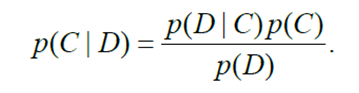

Sentiment analysis, also called opinion mining, is the field of study that analyzes people’s opinions, sentiments, evaluations, appraisals, attitudes, and emotions towards entities such as products, services, organizations, individuals, issues, events, topics, and their attributes. Sentiment analysis and opinion mining mainly focus on opinions which express or imply positive or negative sentiments.
Salah Satu pembelajaran mesin untuk analisis sentimen adalah Naïve Bayes classifier (NBC). NBC merupakan teknik pembelajaran mesin yang berbasis probabilistik. NBC adalah metode sederhana tetapi memiliki akurasi serta performansi yang tinggi dalam pengklasifikasian teks.

The user is able to input the opinion and
The system is able to group the opinion into positive, negative, and neutral
Performance
The system is able to analyze up to 500 words and
Receive document format only in .txt form
Accessibility
The website implements the display with Bootstrap framework
The user is able to input the opinions,
The system is able to train the data and
The system is able to test the opinions
{kind=link}